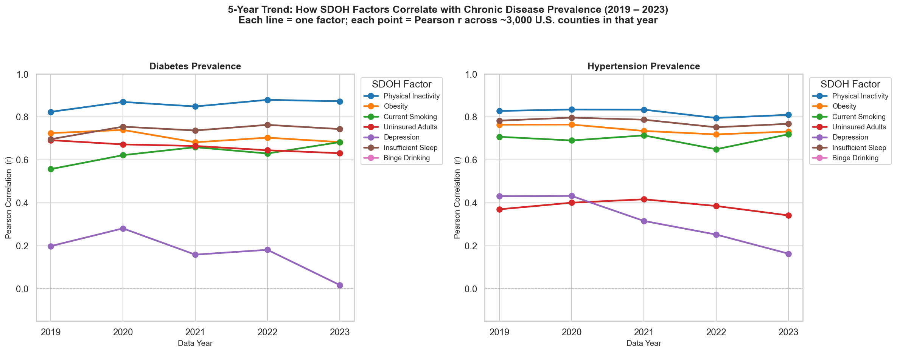
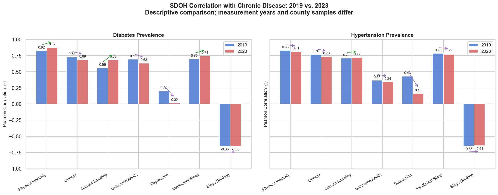
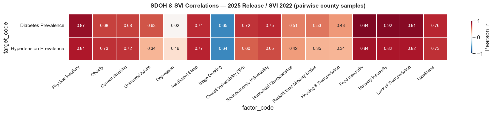
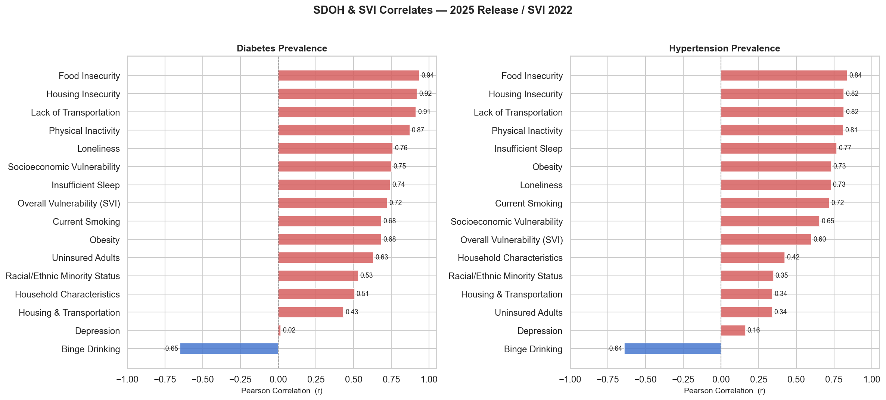
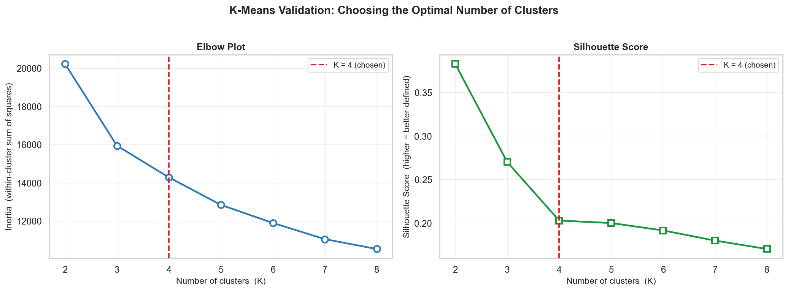
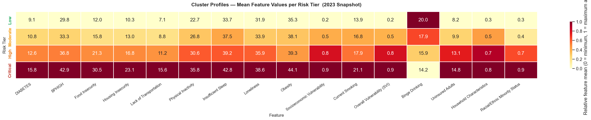
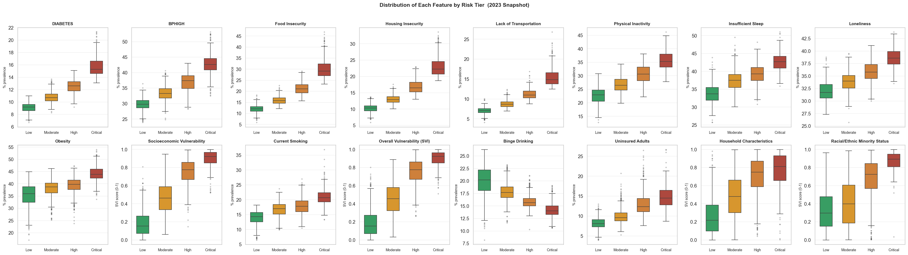

Chronic diseases — particularly diabetes and hypertension — impose an enormous and unequal burden on the U.S. population. Nearly 38 million Americans have diabetes and approximately 122 million have hypertension, yet these conditions are not randomly distributed across geography or social strata. Decades of epidemiological research have established that the social and physical environments in which people are born, grow, live, work, and age — collectively referred to as the Social Determinants of Health (SDOH) — are powerful drivers of chronic disease risk, often outweighing individual behavioral factors.
Population health management seeks to move healthcare intervention upstream, identifying at-risk communities before expensive acute events occur. This requires granular, geographically resolved data that can link disease prevalence to underlying social vulnerabilities. The proliferation of publicly available, county-level public health datasets now makes such analysis feasible at scale, enabling health plans, self-funded employers, and digital health organizations to prioritize resource allocation across thousands of geographies.
This report addresses three interrelated analytical objectives. First, it quantifies the strength and stability of associations between SDOH factors and chronic disease prevalence over a five-year period (2019–2023). Second, it geospatially visualizes diabetes prevalence and social vulnerability to communicate the geographic concentration of risk. Third, it applies unsupervised machine learning — specifically K-Means clustering — to segment U.S. counties into four risk tiers, culminating in the identification of the ten highest-risk counties alongside evidence-based intervention recommendations.
Two publicly available datasets from the U.S. Centers for Disease Control and Prevention (CDC) form the analytical foundation of this work.
The CDC PLACES dataset (formerly 500 Cities) provides model-based, small-area estimates of health outcomes and risk behaviors at the county level. For this analysis, releases spanning data years 2019 through 2023 were retrieved programmatically via the CDC Socrata API. Each release covers approximately 3,143 U.S. counties and includes 36–45 health measures, including age-adjusted prevalence estimates for diabetes (DIABETES), hypertension (BPHIGH), obesity (OBESITY), physical inactivity (LPA), current smoking (CSMOKING), and a suite of behavioral and preventive care indicators.
The CDC/ATSDR Social Vulnerability Index (SVI) quantifies the capacity of communities to withstand and recover from external stressors such as disease outbreaks and disasters. The SVI is constructed from 16 U.S. Census variables organized into four themes: Socioeconomic Status (RPL_THEME1), Household Characteristics (RPL_THEME2), Racial & Ethnic Minority Status (RPL_THEME3), and Housing Type & Transportation (RPL_THEME4). An overall composite score (RPL_THEMES) ranges from 0 (least vulnerable) to 1 (most vulnerable). The 2022 SVI release, covering all 3,143 counties, was used for the primary cross-sectional analysis.
In addition, newer PLACES releases (2024–2025) contain direct survey-based SDOH measures — including food insecurity (FOODINSECU), housing insecurity (HOUSINSECU), and lack of transportation (LACKTRPT) — which were incorporated for the 2023 data year when available.
All PLACES annual releases were concatenated into a single longitudinal panel indexed by FIPS county code and data year, yielding approximately 15,000 county-year observations. SVI variables were merged on FIPS code. County FIPS codes serve as the canonical geographic identifier throughout the analysis, enabling linkage to U.S. Census boundary geometries for mapping.
A U.S. county GeoJSON file was obtained from a public repository and joined to the panel to support Folium-based interactive choropleth mapping. Columns were renamed for consistency across annual releases, and counties with implausible or missing values in key clustering variables were excluded via complete-case analysis (657 counties excluded, leaving 2,299 counties in the clustering sample).
Pearson correlation coefficients were computed between individual SDOH variables and diabetes/hypertension prevalence for each data year from 2019 to 2023. This five-year longitudinal view allows assessment of whether SDOH–disease associations have strengthened, weakened, or remained stable over time. Correlations were computed at the county level (ecological correlations), meaning they capture between-county variation rather than individual-level risk. All analyses use complete cases for each variable pair.
To segment counties into actionable risk tiers, K-Means clustering was applied to a feature matrix derived from the 2023 data year. Features included diabetes prevalence, hypertension prevalence, physical inactivity, obesity, current smoking, and the overall SVI score. All features were standardized to zero mean and unit variance (z-score scaling) prior to clustering to prevent variables with larger absolute ranges from dominating the distance metric.
The optimal number of clusters was determined empirically. The elbow method examined within-cluster sum of squares (WCSS) across K = 2 through 10, and silhouette analysis measured cluster cohesion and separation. Both approaches converged on K = 4 as the appropriate solution, yielding four well-separated tiers labeled — by ascending risk — Low, Moderate, High, and Critical. Tier labels were assigned post-hoc by ranking clusters on mean diabetes prevalence.
Within the Critical tier (n = 238), a composite risk score was computed as the mean of min-max normalized diabetes prevalence, hypertension prevalence, and overall SVI. This composite was used to rank Critical-tier counties and identify the ten highest-risk for the Population Health Brief.
Correlation analysis reveals consistent and strong associations between SDOH factors and county-level diabetes prevalence across all five years examined. Figure 1 presents the temporal evolution of Pearson r between key SDOH variables and diabetes rates, while Figure 2 contrasts the 2019 and 2023 correlation landscapes side by side. Together, these plots confirm that the SDOH–disease relationships are not artifacts of a single data vintage; they have been stable to slightly increasing over the study period.


The 2023 cross-sectional correlation heatmap (Figure 3) extends the analysis to both diabetes and hypertension as outcome variables, and across a broader set of SDOH indicators. This view reveals that most SDOH factors correlate roughly equally with diabetes and hypertension, consistent with shared upstream risk pathways. Physical inactivity stands out as a variable with particularly high correlation with both outcomes across all years.

Figure 4 ranks the individual SDOH factors by their correlation with diabetes prevalence in 2023. The three strongest predictors are food insecurity (r = 0.94), lack of transportation (r = 0.91), and physical inactivity (r = 0.87), all measured at the county level across n = 2,299 counties. Housing insecurity (r ≈ 0.87–0.89) also emerges as a consistent top-tier predictor. These correlations are substantially higher than typically reported in individual-level studies, reflecting the ecological nature of county-level data (ecological correlations suppress within-county heterogeneity), but they nonetheless confirm the well-established role of structural social factors in shaping chronic disease burden.

To communicate geographic patterns visually, an interactive choropleth map was constructed using the Folium library, overlaying county-level diabetes prevalence (2023) with SVI composite scores (Figure 5). The map uses a sequential color scheme for diabetes rates, with county-level SVI encoded as a secondary layer accessible via the layer control. Hovering over a county reveals its name, state, diabetes rate, and SVI score.
The map clearly reveals a geographic concentration of high diabetes prevalence in the Deep South — particularly Mississippi, Alabama, Louisiana, and Arkansas — as well as elevated rates in parts of Appalachia and the rural Southwest. This spatial clustering is not coincidental: these regions consistently rank highest on multiple SVI themes simultaneously, reflecting compounding vulnerabilities across socioeconomic, housing, and transportation dimensions.
Figure 5 (Interactive). County-level diabetes prevalence (2023) overlaid with
CDC/ATSDR Social Vulnerability Index scores. Use the layer control (top right) to toggle
between diabetes and SVI layers. Hover over any county to see its values.
If the map does not render, open ../results/fig5_diabetes_svi_map.html directly in a browser.
Figure 6 presents the elbow curve and silhouette scores used to select K = 4 as the optimal number of clusters. The elbow in the WCSS curve is visible at K = 4, after which marginal gains in explained variance diminish. The silhouette analysis corroborates this choice, showing a local maximum in average silhouette width at K = 4. Together, these diagnostics provide quantitative justification for the four-tier segmentation.

Figure 7 shows the standardized feature profiles (z-scores) for each of the four risk tiers as a heatmap. The Critical tier is uniformly elevated across all features — diabetes, hypertension, physical inactivity, obesity, smoking, and SVI — while the Low tier shows uniformly below-average values. The High and Moderate tiers represent intermediate profiles, with High counties distinguished primarily by elevated disease rates and social vulnerability rather than behavioral factors alone.

Figure 8 provides a distributional view of the same segmentation using box plots, allowing assessment of within-tier variance. The separation between Low and Critical tiers is substantial across all features, with limited overlap. The High tier shows wider variance than the others, suggesting meaningful heterogeneity within that segment that could warrant further sub-stratification in a real-world program context.

Table 1 summarizes the aggregate risk tier profile, confirming the gradient of risk from Low to Critical across all key indicators.
| Risk Tier | Counties (n) | Share | Diabetes Rate | Hypertension Rate | Mean SVI |
|---|---|---|---|---|---|
| Low | 765 | 33% | 9.1% | 29.3% | 0.19 |
| Moderate | 788 | 34% | 10.8% | 33.2% | 0.46 |
| High | 508 | 22% | 12.6% | 38.1% | 0.75 |
| Critical | 238 | 10% | 15.8% | 42.9% | 0.90 |
Table 1. K-Means cluster summary statistics, 2023 data year (n = 2,299 counties).
The county risk tier assignment is visualized geographically in Figure 9. Counties are shaded by tier (green = Low, yellow = Moderate, orange = High, red = Critical). The spatial pattern confirms the Deep South concentration of Critical-tier counties identified in the correlation analysis, while also revealing pockets of elevated risk in Appalachia, the rural Mississippi Delta, and parts of the rural Southwest and Northern Plains.
Figure 9 (Interactive). County-level K-Means risk tier classification (K = 4).
Colors: Low ·
Moderate ·
High ·
Critical.
Hover for county name and tier. If the map does not render, open
../results/fig9_risk_tier_map.html directly in a browser.
Among the 238 Critical-tier counties, a composite risk score — computed as the mean of min-max normalized diabetes prevalence, hypertension prevalence, and overall SVI — was used to rank counties and identify the ten highest-risk. Table 2 presents these counties with their key indicators.
All ten counties are located in Mississippi, Alabama, or Louisiana, consistent with the geographic pattern observed in the choropleth maps. Diabetes rates in the top 10 range from 19.5% to 21.3%, nearly double the national average of 11.1%. Hypertension prevalence exceeds 49% in every top-10 county and reaches 53.1% in Holmes County, MS — the highest-ranked county. SVI scores are at or near the ceiling of the 0–1 scale, with Madison Parish, LA achieving an SVI of 1.000, indicating that no county in the U.S. scores higher on composite social vulnerability. Physical inactivity rates exceed 40% in nine of the ten counties, and obesity rates exceed 47% in all ten.
| # | County | State | Population | Diabetes % | Hypert. % | SVI | Phys. Inact. % | Obesity % | Smoking % |
|---|---|---|---|---|---|---|---|---|---|
| 1 | Holmes | Mississippi | 15,777 | 21.0 | 53.1 | 0.992 | 44.4 | 51.5 | 23.5 |
| 2 | Humphreys | Mississippi | 7,216 | 20.6 | 52.4 | 0.979 | 46.2 | 53.0 | 24.1 |
| 3 | Greene | Alabama | 7,341 | 21.1 | 52.4 | 0.916 | 42.0 | 53.4 | 23.8 |
| 4 | Bullock | Alabama | 9,897 | 21.3 | 52.4 | 0.899 | 42.7 | 51.0 | 24.9 |
| 5 | E. Carroll Parish | Louisiana | 6,829 | 21.3 | 52.5 | 0.878 | 44.1 | 51.7 | 29.1 |
| 6 | Perry | Alabama | 7,738 | 20.5 | 51.9 | 0.921 | 40.3 | 54.0 | 23.3 |
| 7 | Sharkey | Mississippi | 3,336 | 19.6 | 51.2 | 0.984 | 44.3 | 50.5 | 23.5 |
| 8 | Tunica | Mississippi | 9,234 | 19.9 | 51.2 | 0.960 | 44.8 | 50.8 | 23.6 |
| 9 | Coahoma | Mississippi | 20,077 | 19.5 | 50.7 | 0.990 | 42.1 | 47.1 | 22.0 |
| 10 | Madison Parish | Louisiana | 9,246 | 19.6 | 49.6 | 1.000 | 42.5 | 50.1 | 26.2 |
Table 2. Top 10 highest-risk counties, ranked by composite score (mean of normalized diabetes prevalence, hypertension prevalence, and SVI). All 2023 data year values.
The concentration of the ten worst counties across just three adjacent Deep South states underscores the geographic character of chronic disease inequity in the United States. These counties are predominantly rural, have small populations (median ~9,000), and face simultaneous deficits in economic opportunity, physical infrastructure, healthcare access, and social support — all captured in their near-ceiling SVI scores.
The findings of this analysis align with and extend a substantial body of population health literature documenting the primacy of structural social factors in explaining geographic variation in chronic disease. The ecological correlations reported here — particularly food insecurity (r = 0.94) and lack of transportation (r = 0.91) with diabetes — are stronger than those typically observed in individual-level analyses, partly because aggregation to the county level suppresses within-county heterogeneity and inflates ecological correlations (the ecological fallacy). Nonetheless, these associations are analytically useful for geographically targeting resources: counties with high food insecurity and transportation barriers are reliably associated with high diabetes burden, regardless of whether every individual in those counties shares those risk factors.
The K-Means segmentation provides an operational framework for risk stratification that is straightforward to implement and communicate. The four-tier structure — Low, Moderate, High, Critical — maps naturally onto program intensity: universal prevention for all, enhanced monitoring for Moderate, active case management for High, and intensive multi-component intervention for Critical. The validation via elbow and silhouette analysis gives confidence that K = 4 is not arbitrary, though organizations might explore K = 5 or 6 for further granularity within the High tier, which exhibits the widest internal variance.
Several limitations deserve acknowledgment. First, CDC PLACES estimates are model-based small-area estimates derived from the Behavioral Risk Factor Surveillance System (BRFSS), a telephone survey. They carry uncertainty not fully captured by point estimates, particularly for small counties. Second, complete-case analysis excluded 657 counties (22% of all counties) from the clustering due to missing values in one or more features. These counties are not randomly distributed and tend to be smaller and more rural — the very counties most likely to be in the Critical tier — meaning the analysis may undercount the true scope of Critical-tier counties. Third, ecological correlations cannot be directly extrapolated to individual-level causal claims. Finally, SVI and PLACES use different reference years (2022 and 2023 respectively), introducing a small temporal mismatch.
Despite these limitations, the analytical pipeline demonstrated here — data merging, longitudinal correlation analysis, interactive geospatial visualization, and unsupervised clustering — represents a replicable and scalable framework for population health risk stratification. It is directly applicable in contexts such as Medicaid managed care, employer health plans, and value-based care contracting, where identifying high-need geographies is a prerequisite for resource deployment.
Based on the analytical findings, the following evidence-based interventions are recommended for Critical-tier counties, particularly the top 10 identified:
Food access. Given food insecurity correlations exceeding r = 0.94 with diabetes at the county level, and food insecurity rates above 30% in Critical-tier counties versus 17% nationally, priority should be placed on expanding SNAP outreach, establishing mobile food pantry routes, and incentivizing grocery retail in food desert geographies.
Transportation. Counties where transportation access gaps exceed 15% — as seen in all top-10 counties — should be prioritized for community health worker home-visit models and non-emergency medical transportation (NEMT) benefit expansion. Transportation barriers directly impede medication adherence and preventive care utilization.
Preventive and primary care access. Deploying Federally Qualified Health Center (FQHC) satellite sites in Critical-tier counties would address the compounded deficits in healthcare access. Specific clinical priorities should include hypertension screening (prevalence exceeds 49% in all top-10 counties), diabetes management, and obesity counseling.
Physical activity infrastructure. Physical inactivity rates exceeding 40% in the top-10 counties call for low-cost, community-embedded activity programs. Partnerships with schools, faith communities, and local employers can increase access without requiring expensive facility investment in low-resource communities.
Analytical extensions. For organizations adopting this framework operationally, recommended next steps include: (1) incorporating Medicaid claims or employer health data to validate cluster assignments against actual utilization patterns; (2) adding a temporal dimension to cluster assignment to monitor tier transitions over time; and (3) extending the model to ZIP code or census-tract resolution where data permit.
This analysis demonstrates that county-level chronic disease burden in the United States is strongly patterned by social determinants of health, with food insecurity, transportation barriers, and physical inactivity emerging as the strongest ecological correlates of diabetes prevalence. K-Means clustering provides a practical and validated method for segmenting the ~3,000 U.S. counties into four risk tiers, of which 238 Critical-tier counties — concentrated in the Deep South — face diabetes rates nearly double the national average alongside near-ceiling social vulnerability scores.
The ten highest-risk counties identified here — Holmes, Humphreys, and Sharkey Counties in Mississippi; Greene, Bullock, and Perry Counties in Alabama; East Carroll and Madison Parishes in Louisiana; and Tunica and Coahoma Counties in Mississippi — represent communities where chronic disease burden and structural disadvantage converge at extreme levels. Targeted, multi-sector interventions addressing food access, transportation, preventive care, and physical activity infrastructure are warranted in these geographies.
The analytical framework developed in this project — merging CDC PLACES with SVI, performing longitudinal correlation analysis, constructing interactive geospatial visualizations, and applying unsupervised clustering — is reproducible, scalable, and directly applicable by health plans, digital health organizations, and public health agencies engaged in population health management.